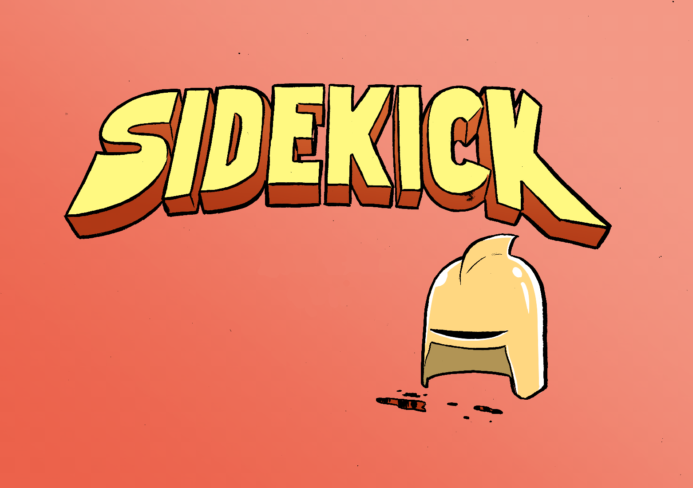

SIDEKICK
Unity / C# · Systems · Audio
An interactive comic meets point-and-click play.
Trailer
videos/project7-video.mp4 to this website folder.Overview
Sidekick was built during my internship at Gamechuck as a two-part experience: an interactive comic that flows into a point-and-click game. I was responsible for putting the game together in Unity, making sure designers could adjust pages, panels, and interactions directly in the Inspector.
I also wrote systems for how the camera moves, how choices and hotspots work, and how music reacts to the story. On top of that, I wrote a clear handover document so other developers can easily extend or update the project.
Scenes & process
Screenshots, development work and details
Music & sound
Music and audio created for Sidekick.